株式会社智翔館 社内向け
智翔館AI（試用版）利用マニュアル
社内の資料をもとに答える智翔館AIの使い方をまとめた手引きです。質問のしかた、会話の前提を置くコンテキスト、チラシ・スライド・計画書・数学の教材などのよく使う作業、試用期間中の不具合の報告と要望の送り方を説明します。画面の写真に付けた赤い番号（1）は、本文の同じ番号の説明に対応しています。
- 対象
- 全職員
- アプリ
- 智翔館アプリ › 智翔館AI（バージョン v0.26 時点）
- 試用期間
- いまは試用期間です。使い方の傾向・不具合・要望を集めて改善します
- 最新版
- ヘルプデスクの「マニュアル」タブからダウンロードできます
- 作成
- 2026年11月
※ 写真に写っている名前・会話・リンクは、説明のために用意した架空の例です。AIの回答の文面も例で、実際の文面は質問の内容や資料によって変わります。
1-1できること・できないこと
| 種類 | できること | 例 |
|---|
| 社内のことを聞く | 理念・方針、講習の要項、部門の計画、地域の学校・入試、就業規則・給与規程、チラシやスライドの作り方などの資料を読んで答えます。答えには出典（資料の名前）が付きます | 冬期講習（中3）の日程は？／有給休暇は何日？ |
| 資料をつくる | チラシの原稿、Google スライド、計画書、数学の教材・小テストなどを、社内の型に沿って作ります（3章） | 冬期講習（中3）のチラシを作って |
| ふだんの作業 | 要約、言い換え、校正、敬語の直し、メールや案内文の下書き、アイデア出し | （文章を貼って）やわらかい表現に直して |
| 渡した資料を読む | PDF・画像・Word・Excel・PowerPoint の添付や、ドライブのリンクを読んで答えます（2-4） | この計画書が方針に沿っているかチェックして |
できないこと
- Web は見ません。社内のこと（日付・料金・数字・方針）は、社内の資料にあるものだけで答えます。資料に無いことは「資料に無い」と答えます
- 業績の数字（売上・利益）、個人の給与額・評価・健康のことは持っていません。就業規則に書いてある決まりは答えますが、ご自身の有給の残りなどは総務に確認してください
- AIが作ったものは下書きです。生徒・保護者に渡す前に、必ず担当者が確かめてください
1-2開き方
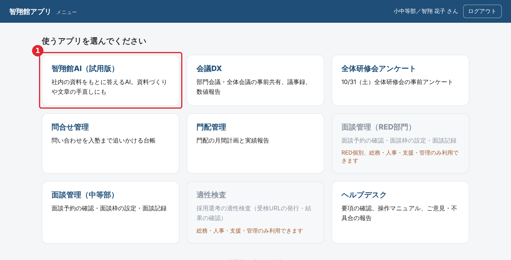
メニュー画面
智翔館アプリにログインし、メニュー画面の 1 智翔館AI（試用版）のカードを押します
智翔館AIの画面が開きます。メニューに戻るときは、左上の「← メニュー」を押します
1-3画面の見方
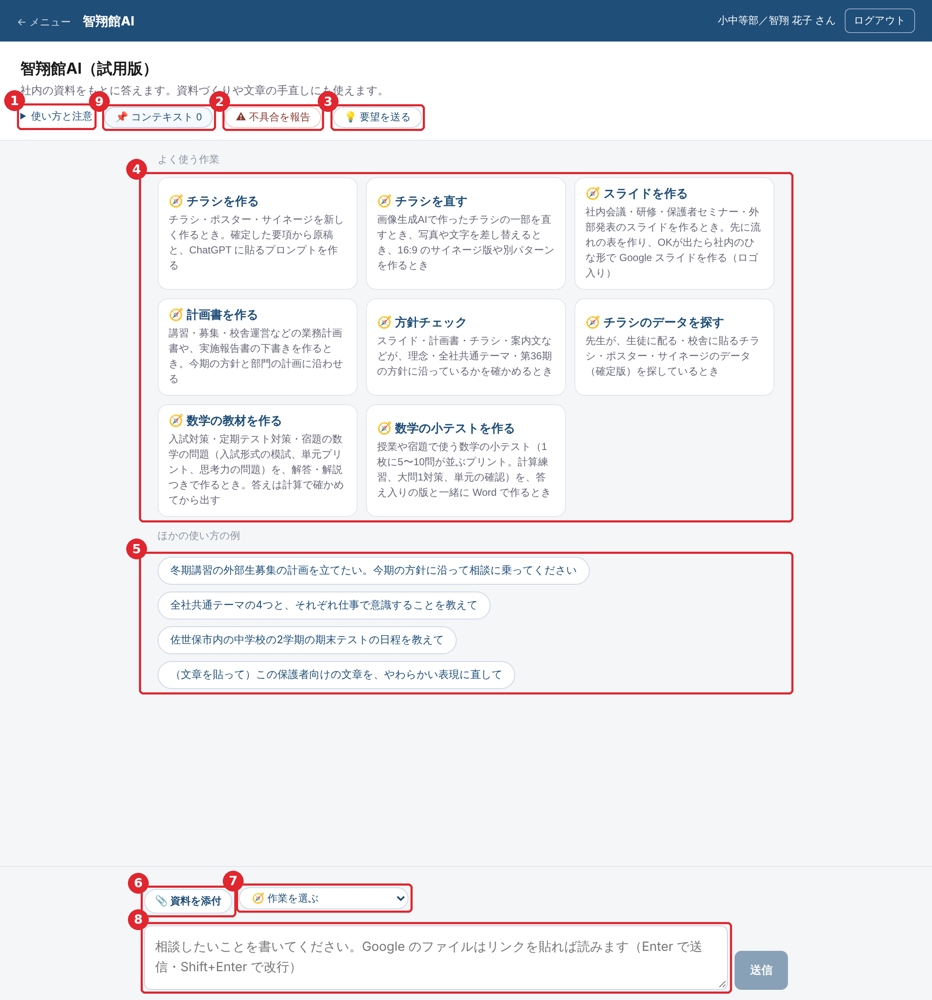
智翔館AIの最初の画面
- 1使い方と注意：押すと、Web を見ないこと、読めるファイル、会話の記録などの注意が開きます
- 2不具合を報告：うまく動かないときに、状況を送ります（4-1）
- 3要望を送る：こういう使い方をしたい、この資料を入れてほしい、などを送ります（4-2）
- 4よく使う作業：チラシ・スライド・計画書・数学の教材などのボタン。押すと、社内の型と資料を使って進めます（3章）
- 5ほかの使い方の例：押すと、例の文が入力欄に入ります
- 6資料を添付：PDF・画像・Word・Excel・PowerPoint を渡します（2-4）
- 7作業を選ぶ：最初の画面のボタンと同じ作業を、会話の途中でも選べます
- 8入力欄：質問や頼みごとを書きます。Enter で送信、Shift＋Enter で改行です（スマートフォンは［送信］ボタン）
- 9📌 コンテキスト：右の欄（会話の前提・読んだ資料・ファイルへの書き出し）を開きます。横に広い画面では、このボタンは出ず、右の欄がいつも出ています（2-6）
1-4スマートフォンで使うとき
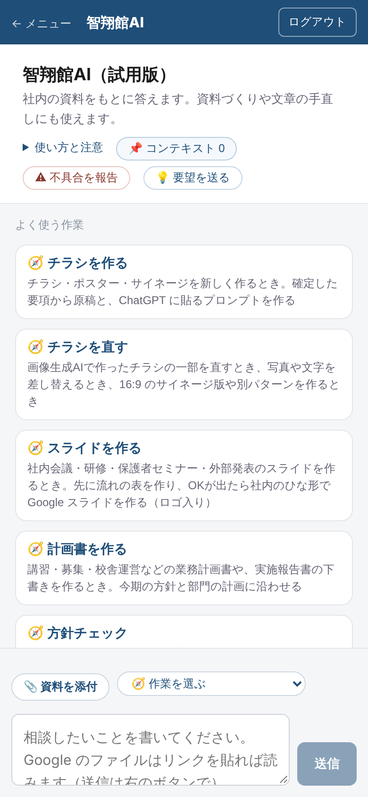
スマートフォンの画面
パソコンと同じ画面を、縦に並べて表示します。入力欄で Enter を押すと改行になるので、送るときは［送信］を押してください。
チラシやスライド、Word の教材など、長い資料づくりは時間がかかります（数分）。作っているあいだに画面を閉じると止まるので、パソコンで使うのがおすすめです。
右の欄（コンテキスト）は、📌 コンテキスト を押すと右から出てきます。閉じるときは右上の × を押します。
2-1質問のしかた
入力欄に、聞きたいことをそのまま書きます（例：有給休暇は入社何か月後から何日もらえますか？）
Enter を押して送ります。作業中は「📄 …を読んでいます」のように、AIがいまやっていることが出ます
回答が少しずつ表示されます。表や見出しは整えて表示されます
うまく聞くコツ
- だれ向けか・何に使うかを一言そえると、合った答えになります（例：「中3の保護者向けに」「校舎の掲示用に」）
- 講座名・学年・校舎は、要項の名前で書くと探しやすくなります（例：「冬期講習会（中3）」）
- 答えが違うと思ったら、そのまま「〇〇の資料で確かめて」と続けて聞けます
2-2回答の見方
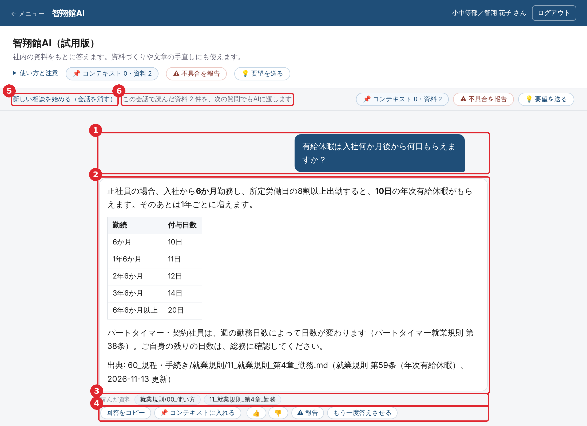
質問と回答（就業規則の質問の例）
- 1質問：送った文です
- 2回答：最後に出典（読んだ資料の名前と更新日）が付きます。社内のことは、出典の資料で確かめてから使ってください
- 3読んだ資料：AIが実際に開いた資料です
- 4回答のボタン：回答をコピー（記号を外した文字。表はスプレッドシートに貼ると列に分かれます）、👍👎（評価。4-3）、⚠ 報告（この回答の不具合を報告。4-1）、もう一度答えさせる
- 5新しい相談を始める：会話を消して、最初の画面に戻ります。コンテキストがあるときは、残すか消すかを選べます（2-3）
- 6持ち越しの表示：この会話で読んだ資料を、次の質問でもAIに渡していることを示します
表やプロンプトなど、そのまま貼って使うものは枠（コード枠）に入り、枠ごとに コピー が付きます。数学の図は回答の中に図で表示され、画像を保存 で PNG として保存できます。
2-3続けて聞く・新しい相談を始める
- 同じ話題なら、そのまま続けて聞けます（例：「パートタイマーの場合は？」）。前の回で読んだ資料や添付した資料も、続けてAIに渡されます
- 話題を変えるときは 新しい相談を始める（会話を消す） を押してください。前の話題の資料が混ざらず、答えが速く・正確になります
- 右の欄にコンテキストがあるときは、残して始める（前提はそのまま、会話だけ新しく）か 消して始める かを選べます
- 会話は、画面を閉じると画面からは消えます。残したいときは、右の欄の 💾 ファイルに書き出す で書き出してください（2-8）。改善のため、質問と回答は社内の記録（会話ログ）に残しています
2-4資料を渡して聞く
| 渡し方 | 読めるもの | やり方 |
|---|
| 添付 | PDF・画像・Word・Excel・PowerPoint・テキスト | 📎 資料を添付 を押してファイルを選び、質問と一緒に送ります（1回に5つまで） |
| ドライブのリンク | Google ドキュメント・スプレッドシート・スライド、PDF、Word・Excel・PowerPoint のファイル、フォルダ | 質問の文にリンクを貼ります（1回に3件まで）。決められたフォルダの中のファイルだけ読めます |
- Word・Excel・PowerPoint は、文字と表だけを読みます（図・画像・色は見ていません）
- 読めないリンクがあるときは、理由が出ます。そのときはファイルを添付してください
- 「このフォルダも読めるようにしてほしい」ときは、💡 要望を送る から送ってください（4-2）
2-5止める・途中で切れたとき
- 送信中は 送信 が 停止 に変わります。押すと、そこで止まります（途中までの回答は残ります）
- 1回の回答は最長で約5分です。長い資料づくりで時間が足りないと「回答が途中で切れました」と出るので、続きを書く を押してください
- エラーが出たときは もう一度送る を押します。何度も続くときは、不具合を報告してください（4-1）
2-6会話の前提を置く（コンテキスト）
担当学年、資料の決まり、前の回答（計画の表など）のように、会話のあいだずっと前提にしてほしいことを、右の欄の「コンテキスト」に置けます。置いた文は、質問のたびにAIに渡されます。毎回同じことを書かなくてよくなります。
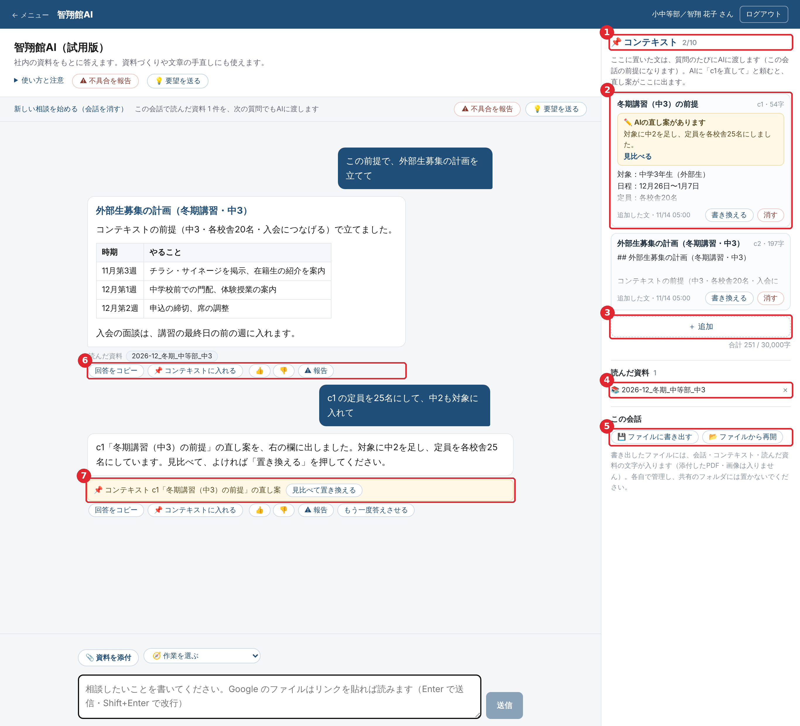
右の欄（コンテキスト・読んだ資料・この会話）
- 1コンテキスト：置いている数（1つの会話に10個まで、合わせて3万字まで）
- 2コンテキストの項目：名前と番号（c1, c2 …）。文を押すと全文が開きます。書き換える で自分で直せます。消す で外します
- 3＋ 追加：名前と文を書いて 追加する を押します（文は貼り付けでも大丈夫です）
- 4読んだ資料：この会話でAIが読んだ資料・添付した文字の資料。次の質問にも自動で渡します。× で外せます。添付した資料は 📌 でコンテキストに固定できます
- 5この会話：会話をファイルに書き出す・ファイルから再開する（2-8）
- 6📌 コンテキストに入れる：その回答を、右の欄に置きます（名前と文を直してから 追加する）
- 7直し案の札：AIがコンテキストの直し案を出すと、回答の下と右の欄に出ます（2-7）
コンテキストに向いているもの
- 前提：「担当は中3の数学」「対象は外部生」「冬期講習（中3）の要項の日程で」
- 決まり：「回答は箇条書きで、300字以内」「保護者向けの文は敬体で」
- 途中の成果：計画の表、チラシの原稿、決まった方針（回答の 📌 コンテキストに入れる）
書き換えるたびに、前の文は「前の版」として5つ前まで残ります。前の版 を押し、この版に戻す で戻せます（戻す前の文も前の版に残ります）。横に広いパソコンの画面では右の欄がいつも出ていて、ノートパソコンやスマートフォンでは 📌 コンテキスト を押すと出てきます。
2-7AIにコンテキストを直してもらう
「c1 の定員を25名にして、中2も対象に入れて」のように、番号か名前で頼みます。「この内容をコンテキストに入れて」と頼むと、新しい項目の案を作ります
AIは直し案を出すだけです。この時点では、コンテキストはまだ変わっていません。回答の下の 見比べて置き換える（右の欄では 見比べる）を押します
変更前と変更後を見比べて、よければ 3 置き換える（新しい項目なら 追加する）を押します
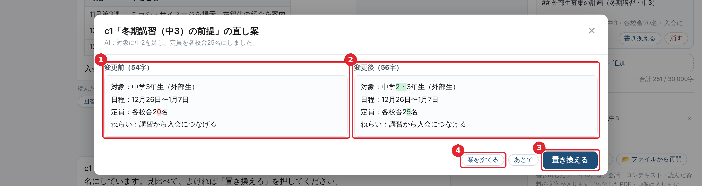
直し案を見比べる
- 1変更前：消える文字に赤の色が付きます
- 2変更後：増える文字に緑の色が付きます
- 3置き換える：押したときだけ入れ替わります。前の文は「前の版」に残るので、あとで戻せます
- 4案を捨てる：使わないとき。あとで は、案を残したまま閉じます
AIが頼まれずにコンテキストを変えることはありません。
2-8会話をファイルに残す・続きから使う
- 右の欄の 💾 ファイルに書き出す を押すと、会話・コンテキスト（前の版も）・読んだ資料の文字が、1つのファイル（.json）としてダウンロードされます。添付した PDF・画像は入りません
- 続きを使うときは、📂 ファイルから再開 でそのファイルを選びます。同じ会話の続きとして質問できます
- ファイルは各自で管理してください。共有のフォルダには置かないでください
- 会話が長くなると（約6万字）、毎回すべてをAIに送るため、回答が遅くなり、費用も増えます。そのときは会話の下に 📌 要点をまとめる が出ます。押すと、AIが要点をコンテキストの案にまとめるので、追加する を押してから 新しい相談を始める → 残して始める で続けてください
3-1作業の始め方
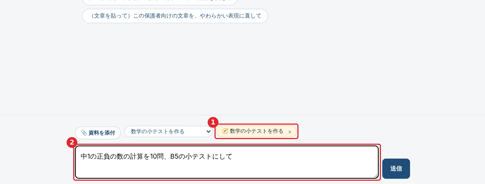
「数学の小テストを作る」を押したところ
最初の画面のよく使う作業のボタン（または 作業を選ぶ）を押します
1 入力欄の横に、選んだ作業が出ます。2 入力欄には文の例が入るので、学年・講座名などを書きかえて送ります
ボタンを押さずに「冬期講習のチラシを作って」と文で頼んでも、AIが作業を選んで進めます
3-2作業の一覧
| 作業 | 使うとき | できあがるもの |
|---|
| チラシを作る | チラシ・ポスター・サイネージを新しく作るとき | 確定した要項からの原稿と、ChatGPT に貼る画像生成のプロンプト |
| チラシを直す | 画像生成AIで作ったチラシの一部を直す、写真・文字の差し替え、16:9 のサイネージ版 | 修正用のプロンプト |
| スライドを作る | 社内会議・研修・保護者セミナーなどのスライド | 先に流れの表 →「この流れで作る」で、社内のひな形の Google スライド（ロゴ入り） |
| 計画書を作る | 講習・募集・校舎運営などの計画書、実施報告書 | 方針と部門の計画に沿った下書き（頼めば Google ドキュメント） |
| 方針チェック | スライド・計画書・チラシが会社の方針に沿っているか確かめるとき（資料を添付） | 良い点・直す点のアドバイス |
| チラシのデータを探す | 配布・掲示する確定版のチラシ・ポスターのデータを探すとき | ドライブの確定版のリンク |
| 数学の教材を作る | 入試対策・定期テスト対策の大問（思考力の問題・模試） | 問題・解答・解説（答えは計算で確かめ済み）。頼めば Word（問題と解答・解説の2つ） |
| 数学の小テストを作る | 1枚に5〜10問が並ぶ小テスト（計算練習・大問1対策） | B5の Word（小テストと答え入りの2つ） |
資料づくりの回答の最後には「確認してほしいこと」が付きます
AIが聞かずに決めたこと（対象・枚数など）、要項に無くて空けた項目（〔要確認〕）、AIが作った言い回しなどです。使う前に、ここを必ず確かめてください。
3-3聞き返しと選択肢のボタン
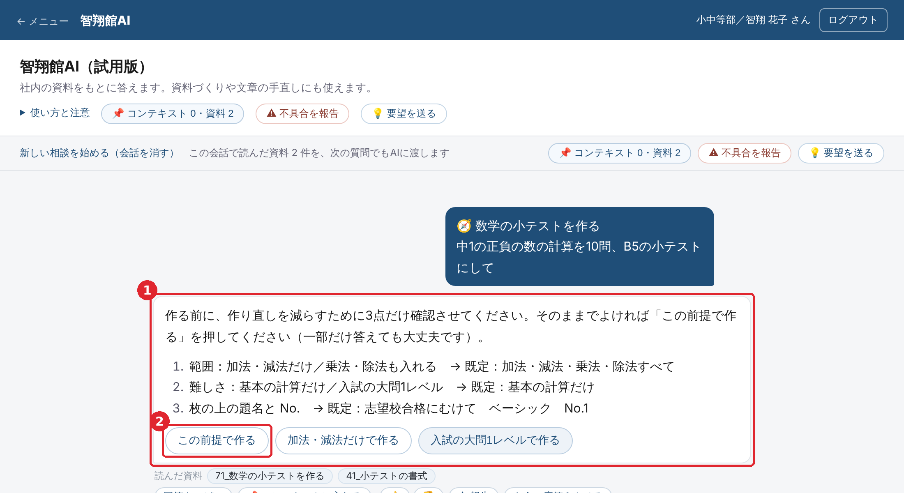
数学の小テストを頼んだときの聞き返し
- 1作るのに時間がかかる作業（数学の教材・小テストなど）は、作り直しを減らすため、最初に決まっていないことを聞きます。答えたいところだけ文で答えても大丈夫です
- 2選択肢のボタン：押すと、その文がそのまま次の質問として送られます。そのままでよければ この前提で作る を押します
最初の頼みごとに条件を全部書いたときや、「おまかせで」「すぐ作って」と書いたときは、聞かずに作ります。
3-4ファイルができたら
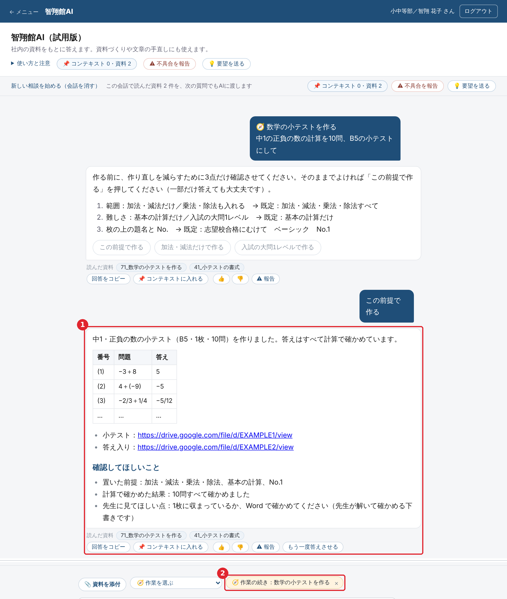
小テストの Word ができたところ
- 1できたファイルのリンクが出ます。ファイルは、ドライブの「AI作成」フォルダに「日付_AI作成_題名」の名前で保存されています
- 2作業の続き：作業が続いていることを示します。続けて「もう1枚作って」などと頼めます。別の話題に移るときは × で作業を終えてください（終えないと、次の質問も作業として時間をかけて考えます）
| ファイル | 頼み方 | 形式 |
|---|
| Google ドキュメント | 「文書にして」「ドキュメントで」 | 計画書・案内文など |
| Google スライド | 流れの表のあとで「この流れで作る」 | 社内のひな形（ロゴ入り）。文字のはみ出しを確かめてください |
| 数学の教材（Word） | 「Word にして」「データで出力して」。表紙が要るときは「模試の形で」 | B4・数学科の仕上がりの書式。問題と解答・解説の2つ |
| 数学の小テスト（Word） | 「数学の小テストを作る」の作業で作ると、そのまま Word になります | B5。小テストと答え入りの2つ |
作ったものは下書きです
数字・日付・料金は確定した要項から取っていますが、使う前に担当者が必ず確かめてください。数学の教材は、数学科の先生が解いて確かめてから配ってください。Word は図の位置と改ページも確かめてください。
4-1不具合を報告する
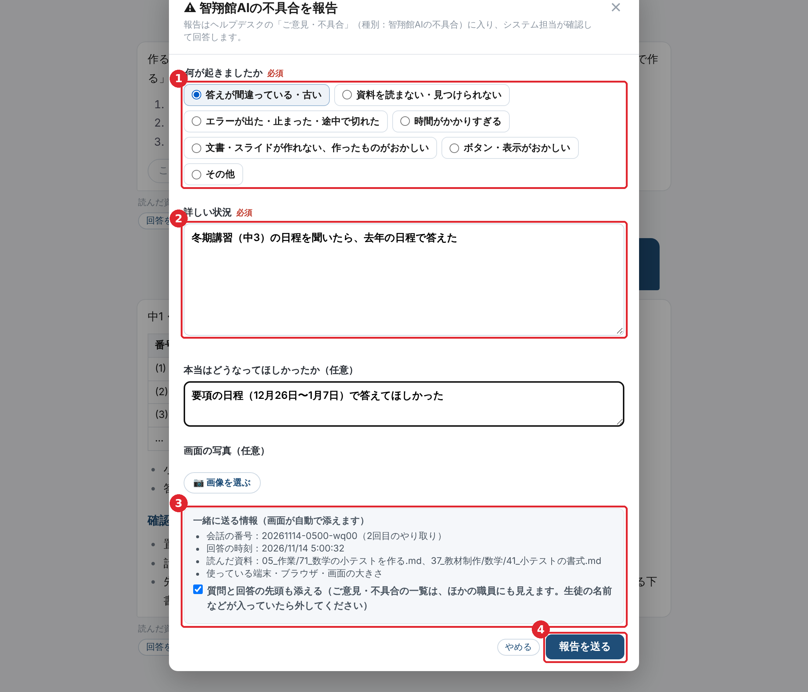
不具合の報告
画面の上の ⚠ 不具合を報告（または回答の下の ⚠ 報告）を押します
1 何が起きたかを選びます（答えが間違っている、資料を読まない、エラー、時間がかかりすぎる など）
2 詳しい状況を書きます。何をしようとして、どう頼み、何が起きたかが分かると直しやすくなります。画面の写真も付けられます
3 会話の番号・読んだ資料などは、画面が自動で添えます。質問と回答の先頭を添えるかも選べます
4 報告を送る を押します。報告はヘルプデスクの「ご意見・不具合」に入り、システム担当が回答します
4-2要望を送る
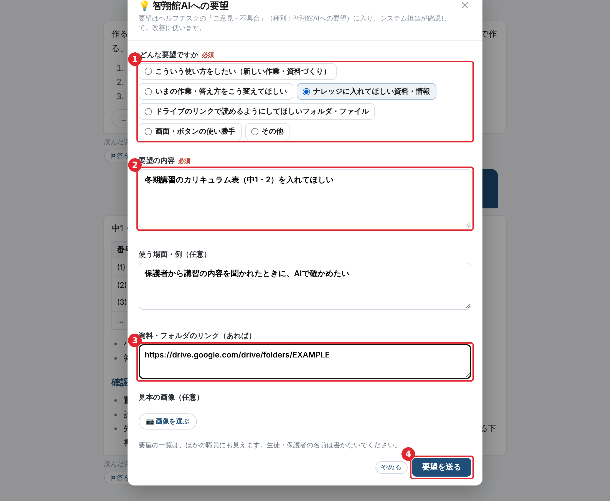
要望を送る
画面の上の 💡 要望を送る を押します
1 要望の種類を選びます：こういう使い方をしたい／いまの作業・答え方を変えてほしい／ナレッジに入れてほしい資料・情報／ドライブのリンクで読めるようにしてほしいフォルダ・ファイル／画面・ボタンの使い勝手
2 要望の内容と、使う場面（いつ・誰が・何のために、いまはどうしているか）を書きます
3 入れてほしい資料やフォルダがあれば、ドライブのリンクを貼ります。見本の画像も付けられます
4 要望を送る を押します。要望はヘルプデスクの「ご意見・不具合」（種別：智翔館AIへの要望）に入ります
4-3回答を評価する（👍👎）
回答の下の 👍 👎 で、役に立ったかを教えてください。👎 のときは、どこが良くなかったかを一言書けます。どの資料が足りないか、どの答え方を直すかの手がかりにします。
4-4使うときに守ること
必ず守ってください
- 生徒・保護者の名前、成績、連絡先は入れないでください。添付する資料からも外してください
- 質問と回答は、改善のため社内の記録（会話ログ）に残ります
- 社内のこと（日付・料金・数字・方針）は、回答の出典で確かめてから使ってください
- AIが作ったものは下書きです。生徒・保護者に渡す前に、担当者が確かめてください
- 作ったファイルのリンクは、社外の人に送らないでください
- 会話を書き出したファイルには、会話の全文が入ります。共有のフォルダに置いたり、社外の人に送ったりしないでください
| こんなとき | こうしてください |
|---|
| 「資料に無い」と言われた | 智翔館AIの資料（ナレッジ）に、まだその情報がありません。資料をお持ちなら添付するかリンクを貼って聞いてください。ナレッジに入れてほしいときは 💡 要望を送る から |
| 答えが間違っている・古い | 出典の資料を確かめ、⚠ 報告 から報告してください。どの資料のどこが正しいかを書いてもらえると助かります |
| 答えに時間がかかる | 資料を何本も読んだり、ファイルを作ったりするときは数分かかります。話題が変わったら 新しい相談を始める を押し、作業の続きは × で終えると速くなります |
| 途中で切れた | 続きを書く を押してください |
| リンクのファイルが読めない | 決められたフォルダの外のファイルは読めません。ファイルを添付するか、読めるようにしてほしいフォルダを要望で送ってください |
| 作ったファイルが見つからない | 回答のリンクから開けます。ドライブの「AI作成」フォルダにも「日付_AI作成_題名」で保存されています |
| 毎回同じ前提を書くのが面倒 | 右の欄の「コンテキスト」に置いてください。質問のたびにAIに渡されます（2-6） |
| 会話を残して、あとで続けたい | 右の欄の 💾 ファイルに書き出す で書き出し、続けるときに 📂 ファイルから再開 で読み込みます（2-8） |
| Web の情報を調べてほしい | 智翔館AIは Web を見ません。必要な情報は資料として渡してください |